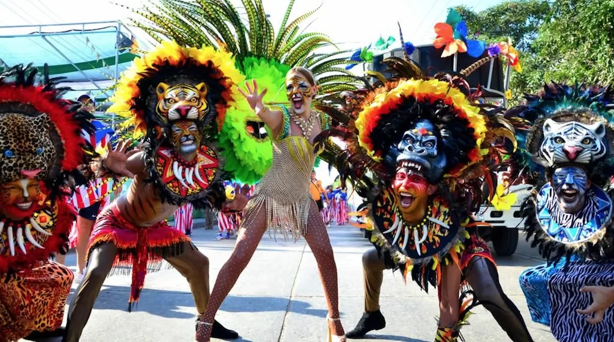
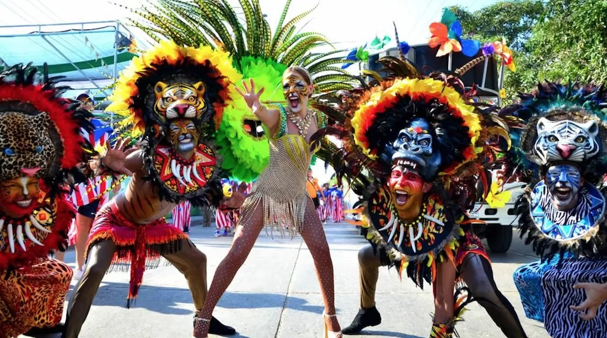
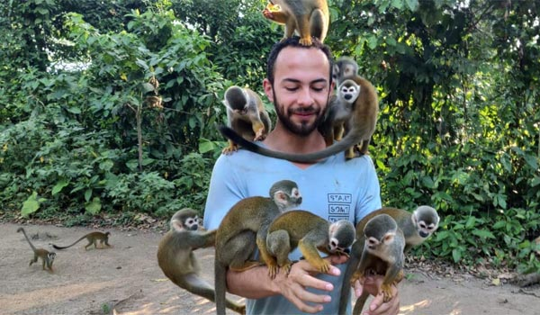
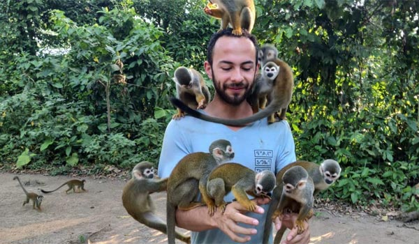

El Eje Cafetero (The Coffee Axis)

Most of Colombia's world-renowned coffee is grown in this picturesque region. It is dotted with small towns containing brightly-painted buildings, all surrounded by the Andes mountains. The region was declared a UNESCO World Heritage Site known as "The Coffee Cultural Landscape of Colombia." The largest city in the Coffee Axis is Pereira - my home for nearly three years.
Pictured: the natural hot springs of Santa Rosa de Cabal; the traditional architecture of Salento; Cocora Valley, home to the wax palm: the tallest palm tree in the world and the national tree of Colombia.
El Caribe (The Caribbean Coast)
 

This region is perhaps the most famous in Colombia, and with good reason: the natural and cultural beauty are unmatched. Stretching from Panama to Venezuela, the Caribbean region features vibrant blue water and white-sand beaches. High above the city of Santa Marta stretch the mountains of the Sierra Nevada, the highest coastal mountain range in the world. Cartagena, formerly the largest and most important port city in colonial Spain, retains its storied history in its architecture. The Caribbean is a bustling tourism zone in Colombia and represents a unique blend of tradition and modernity.
Pictured: Parque Tayrona, a national park full of beautiful beaches and rainforests leading straight up to the mountains of the Sierra Nevada de Santa Marta; Carnaval de Barranquilla, one of the world's largest carnivals, celebrated with music and parades; the bustling financial district of Cartagena sits across from the city's Old Town, surrounded by a Spanish-era fortress of walls.
Los Andes (The Andes Mountains)

The Andes stretch from north to south across Colombia, but the highest mountain towns have a distinct culture, preserving many traditions from their indigenous roots dating back centuries. One exception is the capital of Bogotá, one of the highest capitals in the world and by far the largest city in the country. In the regions with the highest altitudes, cycling is a hugely popular sport, with Colombia producing some of the best competitive cyclists in the world.
Pictured: Colombia's capital, Bogotá, sits at 2,640 meters above sea level and is home to nearly 11 million people; women in the high-altitude region of Santander in traditional clothing; the snow-capped mountains of Parque de los Nevados are some of the highest in the country.
El Pacífico (The Pacific Coast)


The Pacific Coast of Colombia is one of the most breathtaking places I have ever seen. The greyish beaches are full of massive rock formations and lead into the thick vegetation of the rainforest. Small boats leave shore each morning to collect the day's fresh fish while coconuts and plantains are harvested on land. Settled primarily by freed slaves in the 18th century, this region holds cultural ties to Africa in its music, dance, cuisine, and dialects. Cali, known as the capital of the Pacific region, is famous as a global destination for salsa dancing.
Pictured: Whales migrate south along the coast for a few months each year; beaches lead directly into the rainforst in one of the wettest regions of the world; salsa dancers perform in a parade in Cali, the world capital of salsa.
Las Amazonas (The Amazon Rainforest)
 

The Amazon Rainforest is the most remote region of Colombia, resting in the southeast corner at the country's border with Brazil and Ecuador. It is home to a number of indigenous groups that remain relatively isolated beyond the influx of tourists. The Amazon hosts an incredible diversity of plants and animals, many of which remain mysteries to researchers. Sadly, the region is under threat as deforestation continues to overtake the Amazon, but conservation groups continue to fight to protect the world's largest tropical rainforest.
Pictured: A home with a thatched roof of palm sits high above a river and the famous water lilies of the Amazon; indigenous women of the Colombian Amazon in traditional dress; very friendly monkeys meet tourists in hopes of swiping any snacks or valuables they bring along.
Colombia is one of the most biodiverse countries in the world, home to various ecosystems and thousands of species of plants and animals. Each region has its own rich environment and cultural traditions. It is realmente mágico: truly magic!